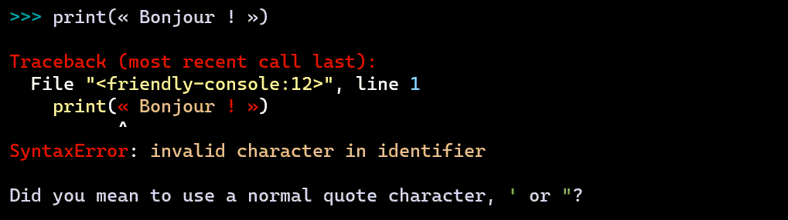

Console basics¶
As a rule, we do not recommend that beginners write their programs in a console (repl) but that they use an editor instead. However, using a console is useful to demonstrate various features of Friendly-traceback. Furthermore, as we will see when we discuss using Friendly-traceback with editors, knowing the console basics shown here might come in handy.
what()¶
Imagine that you are a beginner. You write some code and are suddenly confronted with the following:

You see UnboundLocalError, and have no idea what it might mean,
in spite of the hint provided by Friendly-traceback.
Rather than heading to StackOverflow to ask a question and have it
immediately closed as being a duplicate, you simply ask what()
and Friendly-traceback tries to help you.

what() only gives here some generic information about what an UnboundLocalError is.
Later, we’ll see how Friendly-traceback can often give more useful
information regarding the exact cause of the exception, and how to fix it.
what() can be useful even if an exception has not been raised.
In principle, you can get information about any exception by passing it as
an object:
>>> what(IndexError)
An IndexError occurs when you are try to get an item from a list, a tuple, or a similar
object (sequence), by using an index which does not exists; typically, this is because
the index you give is greater than the length of the sequence. Reminder: the first item
of a sequence is at index 0.
Instead of using a known Exception object, we can pass its name as a string if we prefer. We can even specify a language other than English … as long as it is French - hopefully, support for more languages will be added by contributors:
>>> what("IndentationError", lang='fr')
Une exception de type IndentationError se produit lorsqu'une ligne de code n'est pas
indentée (c'est-à-dire alignée verticalement avec les autres lignes) de la façon
attendue.
why()¶
You are a beginner reading some code found in a tutorial on the web and decide to try it out by copy-pasting it.
{kind=link}
So, this didn’t work, but you’d like to find out a bit more information than that provided by the terse hint shown after the traceback.
>>> why()
Python indicates that you used some unicode characters not allowed as part
of a variable name; this includes many emojis. However, I suspect that you
used a fancy unicode quotation mark instead of a normal single or double
quote for a string. This can happen if you copy-pasted code.
where()¶
Python traceback give information about where an exception was raised and more. But it does so in a way that’s not entirely friendly to users. Let’s look at a different example, and see how Friendly-traceback can give a bit more information about the location of the problem.
>>> test_4()
Traceback (most recent call last):
File "<friendly-console:4>", line 1, in <module>
test_4()
File "<friendly-console:3>", line 2, in test_4
test_2()
File "<friendly-console:2>", line 2, in test_2
test_1(3)
File "<friendly-console:1>", line 2, in test_1
x += y
NameError: name 'y' is not defined
This might be confusing to a beginner. Let’s see if we can give a bit more information about where the error occurred:
>>> where()
Execution stopped on line 1 of file '<friendly-console:4>'.
-->1: test_4()
Known objects shown above:
test_4: <function test_4>
Exception raised on line 2 of file '<friendly-console:1>'.
1: def test_1(x):
-->2: x += y
3:
Known objects shown above:
global test_1: <function test_1>
x: 3
Friendly-traceback gives detailed information about two locations at most: where the program stopped and where the exception was raised. It shows a few lines of code near the source of the problem, and gives some information about each identifier appearing on these lines of code.
explain()¶
Sometimes, it might make sense to show all the available information at
once. This is what explain() does. Let’s illustrate it with
a screen capture.

explain() shows everything: a friendly traceback with an
added hint() (more on this later), as well as the output of
what(), where() and why().
more()¶
After a while, users do not need to see the display of what() as
they have learned to recognize most exceptions. However, after
seeing a traceback, they might want to see more information
about where() and why(): this is what more() does.
We purposely do not show an example, and leave it up to you to try!
More about explain()¶
explain() is a bit more versatile than we let it on: it can
take an argument that can change its behaviour.
For example, explain("what") is equivalent to what();
explain("why") is equivalent to why().
For the console, this is clearly redundant. However, it is something
to keep in mind as it might be more useful later.
API¶
console.py¶
Adaptation of Python’s console found in code.py so that it can be used to show some “friendly” tracebacks.
-
class
friendly_traceback.console.FriendlyConsole(locals=None, use_rich=False)[source]¶ -
-
push(line)[source]¶ Push a line to the interpreter.
The line should not have a trailing newline; it may have internal newlines. The line is appended to a buffer and the interpreter’s runsource() method is called with the concatenated contents of the buffer as source. If this indicates that the command was executed or invalid, the buffer is reset; otherwise, the command is incomplete, and the buffer is left as it was after the line was appended. The return value is True if more input is required, False if the line was dealt with in some way (this is the same as runsource()).
-
raw_input(prompt='')[source]¶ Write a prompt and read a line. The returned line does not include the trailing newline. When the user enters the EOF key sequence, EOFError is raised. The base implementation uses the built-in function input(); a subclass may replace this with a different implementation.
-
runcode(code)[source]¶ Execute a code object.
When an exception occurs, friendly_traceback.explain_traceback() is called to display a traceback. All exceptions are caught except SystemExit, which, unlike the case for the original version in the standard library, cleanly exists the program. This is done so as to avoid our Friendly-traceback’s exception hook to intercept it and confuse the users.
A note about KeyboardInterrupt: this exception may occur elsewhere in this code, and may not always be caught. The caller should be prepared to deal with it.
-
runsource(source, filename='<input>', symbol='single')[source]¶ Compile and run some source in the interpreter.
Arguments are as for compile_command().
One several things can happen:
1) The input is incorrect; compile_command() raised an exception (SyntaxError or OverflowError). A syntax traceback will be printed .
2) The input is incomplete, and more input is required; compile_command() returned None. Nothing happens.
3) The input is complete; compile_command() returned a code object. The code is executed by calling self.runcode() (which also handles run-time exceptions, except for SystemExit).
The return value is True in case 2, False in the other cases (unless an exception is raised). The return value can be used to decide whether to use sys.ps1 or sys.ps2 to prompt the next line.
-
showsyntaxerror(filename=None)[source]¶ Display the syntax error that just occurred.
This doesn’t display a stack trace because there isn’t one.
If a filename is given, it is stuffed in the exception instead of what was there before (because Python’s parser always uses “<string>” when reading from a string).
The output is written by self.write(), below.
-
-
friendly_traceback.console.debug()[source]¶ This functions displays the true traceback recorded, that includes friendly-traceback’s own code. It also adds the suggestion/hint from friendly-traceback and sets a debug flag for the current session.
-
friendly_traceback.console.debug_tb()[source]¶ Shows the true Python traceback, which includes files from friendly-traceback itself.
-
friendly_traceback.console.explain(include='explain')[source]¶ Shows the previously recorded traceback info again, with the specified verbosity level.
-
friendly_traceback.console.friendly_tb()[source]¶ Shows the friendly traceback, which includes the hint/suggestion if available.
-
friendly_traceback.console.more()[source]¶ Used to display information additional to the minimal traceback, with the exception of the generic information. Potentially useful for advanced users.
-
friendly_traceback.console.python_tb()[source]¶ Shows the Python traceback, excluding files from friendly-traceback itself.
-
friendly_traceback.console.start_console(local_vars=None, use_rich=False, include='friendly_tb', lang='en', banner=None)[source]¶ Starts a console; modified from code.interact
-
friendly_traceback.console.what(exception=None, lang='en', pre=False)[source]¶ If known, shows the generic explanation about a given exception.